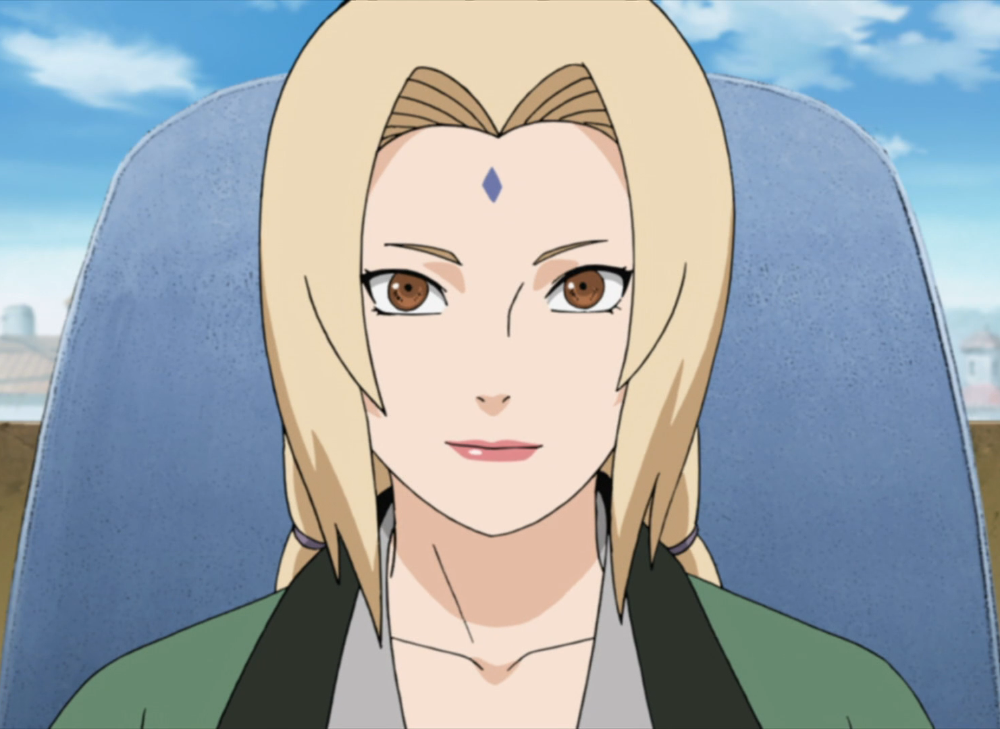

Tsunade (綱手, Tsunade) é uma dos Sannin Lendários de Konohagakure. Embora seja considerada a kunoichi mais poderosa do mundo e a maior ninja médica, Tsunade abandonou a vida de shinobi por muitos anos em busca de outros objetivos. Ela acaba sendo convencida a voltar para Konoha e se torna a Quinta Hokage (五代目火影, Godaime Hokage; Literalmente significa "Quinta Sombra do Fogo"), onde ela usa sua força para reprimir os inimigos da vila e seu conhecimento médico para manter os moradores à salvo. Eventualmente, ela renuncia seu cargo e passa sua posição para Kakashi Hatake.